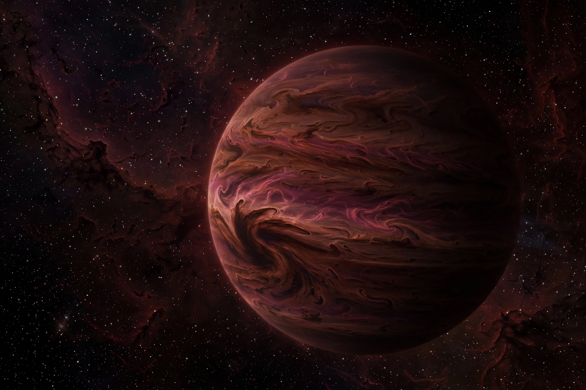

A brown dwarf is a type of substellar object that has a mass between the most massive gas giant planets and the least massive stars, approximately 13 to 80 times Jupiter's mass. They can fuse deuterium but not sustain hydrogen-1 fusion like true stars.

Theorised in 1960s by Shiv Kumar as failed stars; first unambiguous discovery Gliese 229B in 1995, and Teide 1. Thousands now known from infrared surveys WISE and 2MASS.
Cool, dim, emitting mainly infrared, with methane and water in atmospheres, weather and aurorae. Boundary with planets debated by mass vs formation. See Star, Gas giant, Substellar object.